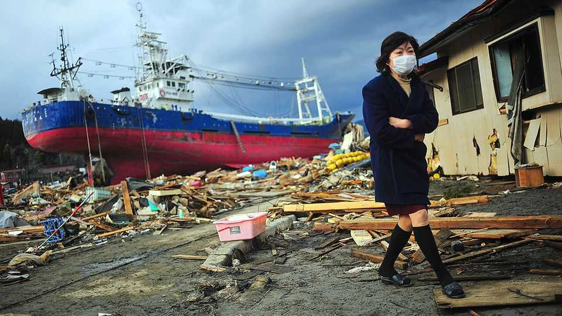
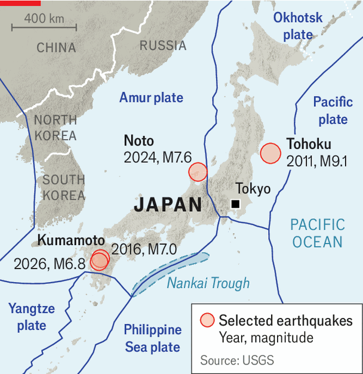

Japan prepares for its next natural disaster
Its new agency has plenty to do before a catastrophe strikes

Nov 5th 2026
AMONG THE countries most prone to natural disasters, Japan has a habit of spawning new bureaucracies. Yet, despite in recent years launching agencies for digital technology and for children and families, its governments have consistently batted away a more obvious idea: to set up a disaster agency. That changed on November 2nd. At the new body’s launch, Hosono Goshi, its freshly appointed minister, stood before a backdrop with a colourful logo resembling the character for “prevent” in bosai, or disaster prevention. He vowed to make Japan “the world’s most disaster-prepared nation”, ready for calamities “on the scale of a national crisis”.

Sitting at the junction of four tectonic plates (see map), Japan suffers around a fifth of the world’s earthquakes of magnitude 6 or greater. The earthquake and tsunami in 2011 in Tohoku in the north-east of the main island of Honshu, which triggered a nuclear meltdown, are strong memories. In 2024 the Noto peninsula was devastated by a magnitude 7.6 earthquake, and another powerful one struck Kumamoto this summer. Torrential rains and floods, intensified by climate change, pose a growing threat, too.
Yet even these calamities may be dwarfed by what lies ahead, says Kawata Yoshiaki, a disaster-management expert at Kansai University who advised the government about the agency. Seismologists warn of two catastrophic earthquakes; their statistical model suggests a 70% chance of a magnitude 7 or higher quake directly hitting the Tokyo metropolitan area in the next 30 years. Over the same period another feared megaquake along the Nankai Trough off Japan’s Pacific coast has a 60-90% probability. In the worst case, such a quake could kill nearly 300,000 people, force 12.3m to evacuate and cause ¥292trn ($1.8trn) in economic losses, equivalent to more than 40% of Japan’s annual GDP. Mr Kawata expects long blackouts and broken supply chains that would leave vast numbers short of food.
Japan is already a global leader in disaster preparedness, especially in hardware such as earthquake-resistant buildings and early-warning systems. With the new agency, the government hopes to streamline its software and put more resources towards preparing for the bigger and more complex disasters that may lie ahead. Until now, responsibility for disaster management has been distributed across different ministries and levels of government. The prime minister oversaw such efforts with support from a small unit in the Cabinet Office, staffed by officials seconded from other ministries, who rotate out every few years. Ueshima Yasuhiro of Japan Platform, a network of aid groups, likens the government’s previous approach to “putting on a Band-Aid” whenever disaster strikes, rather than treating underlying risks. The new agency, with around 350 staff, aims to boost preparedness by building up institutional knowledge about dealing with a range of potential disasters.
Creating a single centralised body should help address one of the Japanese system’s biggest weaknesses: a notoriously siloed bureaucracy that struggles to co-ordinate across institutions. Consider hospitals, says Mr Kawata, pointing out that they could lose power during a big Tokyo earthquake, putting many thousands of patients at risk; planning evacuations would involve the health ministry. The fisheries agency, meanwhile, could help fishing communities protect themselves against tsunamis. While Mr Hosono will handle day-to-day operations, Takaichi Sanae, the prime minister, will officially head the agency, which will also have powers to make suggestions to other ministries.
Climate change and more extreme weather are demanding vigilance towards less familiar threats. Tokyo experienced 37 consecutive days of rain until the beginning of October this year, the longest stretch since records began in 1886. In nearby Chiba, record rains wreaked havoc in August, followed by a flood weeks later. Waki Yuichiro, a 52-year-old resident, whose house was flooded and car ruined, says he had prepared for earthquakes, “but I never imagined flooding would affect us…In the future, we have to prepare for the unexpected—anything can happen.” Tanaka Yasuo, a volunteer who visits Chiba to repair air-conditioners damaged by the flooding—essential appliances during Japan’s sweltering summer—says that in the past he used to have time to rest between disasters; now they come so frequently that “I can barely take a break”.
Japan’s demography, with its large number of old people, makes it vulnerable in other ways. One growing concern is saigai kanrenshi, or disaster-related deaths: people who survive the initial catastrophe but later die from prolonged stress or deteriorating health during evacuation. After an earthquake in Kumamoto in 2016, such deaths accounted for more than 80% of the toll. In Noto, too, they made up 70% of deaths. Poor conditions in evacuation centres, where survivors still often sleep on crowded gymnasium floors and without adequate sanitation or nutritious food, can make things worse. Such evacuation centres have hardly improved over the years. Ishiba Shigeru, a former prime minister who championed the disaster agency, blames a culture that prizes perseverance and “idealises disaster survivors who endure hardship”. Sugano Taku of Osaka Metropolitan University points out that municipalities with inadequate resources are being left to handle them on their own; the new agency is supposed to offer them guidance and support.
But it is just one part of Japan’s approach to disasters, which rests on three principles: kojo, government assistance; kyojo, mutual help; and jijo, self-help. In Kumamoto, Fujino Tatsuo and other volunteers clambered onto damaged roofs, removing heavy kawara, traditional Japanese tiles that could fall in another earthquake. Nearby, Miyabara Yukimi’s home had collapsed, though her whole family miraculously crawled out of the rubble. She and her husband spent weeks sleeping in a lorry before volunteers helped them build a makeshift shelter. “It feels like we lost everything—but we still have to make the first step,” says Ms Miyabara.
On its first day the new disaster agency kicked off by issuing an “emergency request” urging local governments to strengthen disaster preparations and citizens to take precautions themselves. Mr Hosono stressed that jijo remained essential. “We cannot achieve this by relying on the government alone,” he said of his ambition to make Japan even more of an example to the rest of the world in disaster preparedness. He advised citizens to secure furniture against earthquakes and stockpile at least three days’ worth of food and water—preferably, enough for a week. ■
For exclusive coverage of Asian politics, economics and security, sign up to Asia Bulletin, our weekly subscriber-only newsletter.